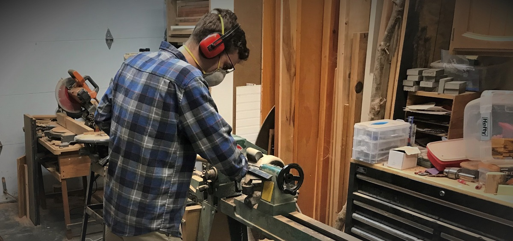

Jumpstart to woodworking...
- Find the right wood
- Get the right tools
- Learn a few tips
Just beginning or interested in woodworking?
Starting a wood project can be daunting but with a touch of help
and some advice, anyone can do a little woodworking just fine.
Woodworking is a dying trade that awaits your arrival.
- It’s a great hobby
- It can output wonderful gifts
- It lets you do your own repairs and remodels, saving you great sums of money.